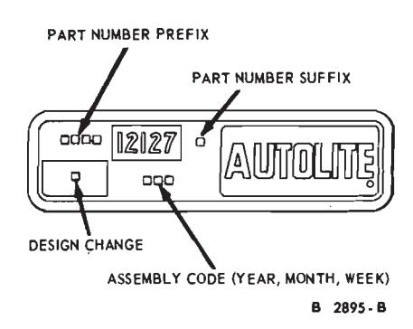

Part 22-01
Sub-parts
- Testing and Diagnosis — 22-01-02
| MODEL APPLICATION ALL CARS | |||
|---|---|---|---|
| COMPONENT | Page | COMPONENT | Page |
| ARE-14-16 TESTER | DISTRIBUTOR ROTOR | ||
| Breaker Point Resistance Test | 22-06 | Cleaning and Inspection | . 22-17 |
| Distributor Mechanical Operation Test | . 22-06 | ||
| Distributor Spark Advance Test | . 22-06 | DUAL POINTS | |
| Insulation and Leakage Test | 22-06 | Dwell Angle Adjustment | . 22-05 |
| ARE-27-44 DWELL TESTER | ELECTRONIC DISTRIBUTOR | ||
| Distributor Tests | . 22-05 | MODULATOR | |
| ARE-236 TESTER | Operating Test | 22-08 | |
| Distributor Tests | . 22-06 | ELECTRONIC RPM LIMITER | |
| Distributor Mechanical Operation Test | (GOVERNOR) | 1 | |
| Distributor Spark Advance Test | Operating Test | 22-10 | |
| Insulation and Leakage Test | Operating Test | 22-10 | |
| modulation and Leakage Test | 22-00 | IGNITION SYSTEM | |
| BREAKER POINTS | Battery to Coil Voltmeter Test | 22-03 | |
| Alignment | 22-11 | Breaker Point Resistance Test | |
| Cleaning | Cleaning and Inspection | 22-16 | |
| Dwell Angle Adjustment | Coil to Ground Voltmeter Test | ||
| Gap Adjustment | Ignition Switch Voltmeter Test | ||
| Installation | 22-11 | Insulation and Leakage Test | |
| Removal | Resistance Wire Voltmeter Test | ||
| Resistance Test | . 22-06 | Secondary (High Tension) Wires Resistance | |
| Spring Tension Adjustment | . 22-12 | Test | 22-04 |
| Spark Intensity Test | |||
| CENTRIFUGAL ADVANCE MECHANISM | 1 1 | Starting Ignition Circuit Voltmeter Test | |
| Adjustment | . 22-07 | ||
| COIL | IGNITION SWITCH | ||
| Cleaning | 22.17 | Voltmeter Test | 22-04 |
| Coil to Ground Test | 22-17 | RESISTANCE WIRE | |
| Coil Test | . 22-04 | Installation | 22-14 |
| Spark Intensity Test | Removal | ||
| Spark Intensity Test | . 22-03 | Voltmeter Test | |
| CONDENSER | |||
| Installation | . 22-11 | SPARK PLUGS | |
| Removal | Cleaning and Inspection | 22-16 | |
| Installation | 22-14 | ||
| DISTRIBUTOR | Removal | 22-13 | |
| Advance and Retard Check (On Engine) | . 22-06 | Testing | 22-05 |
| Advance and Retard Test | 22-07 | SPARK PLUG WIRES | |
| Cleaning and Inspection | 22.12 | ||
| Centrifugal Advance Adjustment | . 22-07 | Removal and Installation | |
| Dual Diaphragm Test | . 22-07 | Spark Intensity Test | 22-03 |
| Initial Ignition Timing | . 22-12 | VACUUM ADVANCE MECHANISM | |
| Mechanical Operation Test | 22-06 | Adjustment | 22-07 |
| Vacuum Advance Adjustment | . 22-07 | ||
| DISTRIBUTOR CAP | VACUUM DECELERATION VALVE TEST | 22-08 | |
| Cleaning and Inspection | 22-17 | VACUUM CONTROL VALVE TEST | 22-08 |

Fig. 1 — Distributor Identification
General Information
The 1970 car engines incorporate a closed positive crankcase ventilation system and an exhaust emission control system to reduce engine emission to Government specifications.
To maintain the required exhaust emission levels, the carburetor must be kept in good operating condition and be adjusted to specifications, and the engine should be in good operating condition.
Additional engine performance checks are required to keep the exhaust emissions at the specified minimum pollutant level. Refer to the applicable owners manual for these performance checks and the recommended intervals.
For satisfactory performance of the 1970 engines, some of the engine test and adjustment procedures have been changed, particularly on the ignition and fuel systems. Thus, when performing tests, adjustments or repairs to the engine, ignition system or fuel system, it is essential to follow the procedures and specifications in Groups 21, 22 and 23 of this manual.
This part covers conventional ignition system description, tests, adjustments and repair operations, and the cleaning and inspection procedures.
Complete engine specifications, including engine, ignition and fuel system components, are covered in applicable Parts of Group 21. All other specifications for ignition system components are covered in Part 22-02.
For distributor removal, disassembly, assembly, installation, major repair procedures and specifications, refer to the pertinent part of this group.
Distributor Identification
The distributor identification number is stamped on the distributor housing. The basic part number for distributors is 12127. To procure replacement parts, it is necessary to know the part No. prefix and suffix and, in some cases, the design code change (Fig. 1).
Always refer to the Master Parts Catalog for parts usage and interchangeability before replacing a distributor or a component part for a distributor.